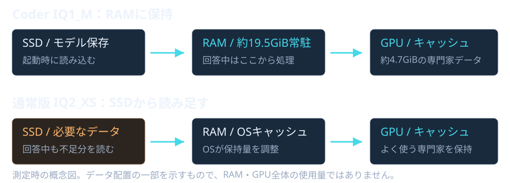
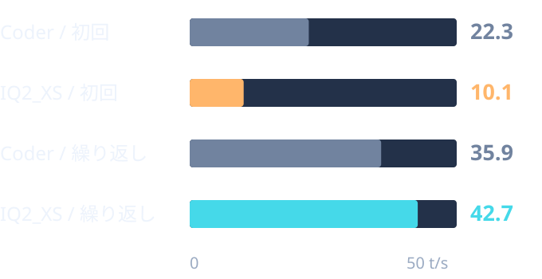
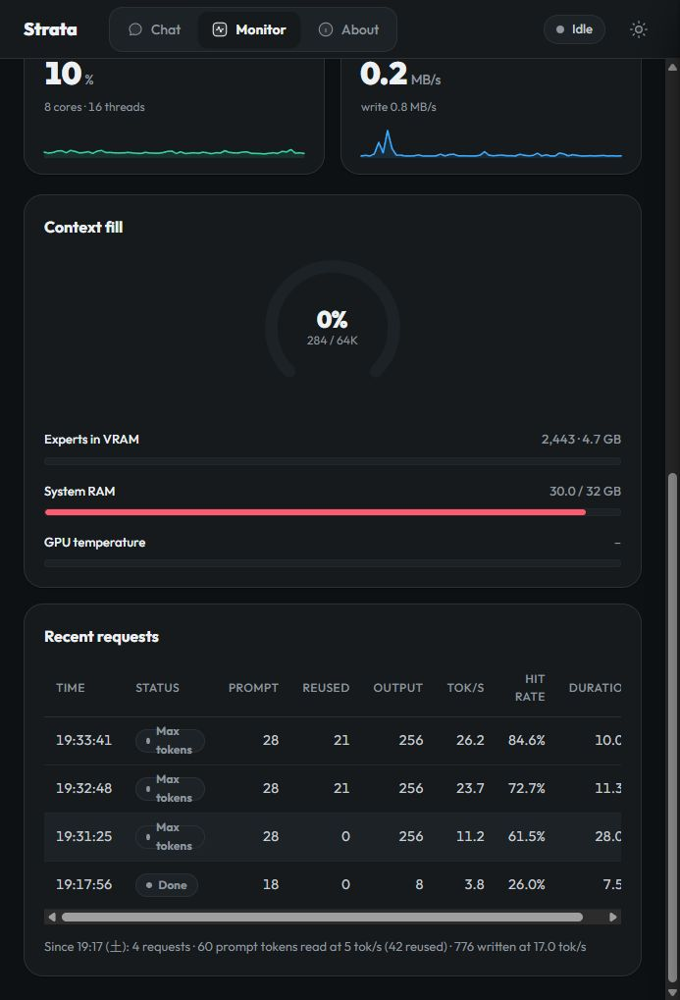
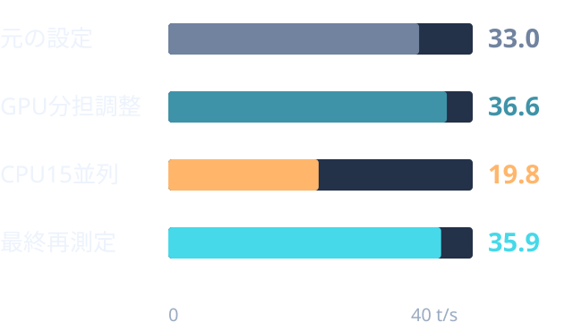

コード向け・専門家を減らした版
Coder IQ1_M
Qwen3.8-Flash-Next Coder IQ1_M
コード向けに、各層の専門家を通常版の半分に減らしたモデル。このPCでは、必要な専門家データをRAMに常駐させて動かせました。
- モデルの特徴
- コード向けに絞った構成
- このPCでの動作
- RAM常駐＋GPUキャッシュ 成功した最終測定時の状態
- 今回確認できた用途
- 小規模CSVツールは完成 SQLiteの複数ファイル課題は未完成
試したのはCoder IQ1_Mと通常版 IQ2_XSの2モデル。まずモデル自体の特徴と動作の違いを整理し、その後に速度・コーディング能力を比較します。
コード向け・専門家を減らした版
Qwen3.8-Flash-Next Coder IQ1_M
コード向けに、各層の専門家を通常版の半分に減らしたモデル。このPCでは、必要な専門家データをRAMに常駐させて動かせました。
通常版・専門家を維持した版
Qwen3.8-Flash-Next IQ2_XS
通常版モデルのIQ2_XS量子化。専門家データが約33GiBあり、このPCのRAMだけではOS等の分も含めて保持できず、SSDから補う構成になりました。
Coder IQ1_Mと通常版IQ2_XSは、モデルの種類と専門家の数も異なります。今回の性能差を量子化だけの効果とは判断できません。ほかのモデルは、このレポートでは実行評価していません。
どちらもモデルをSSDに保存します。違うのは、回答中に必要なデータをRAMに保持できるか、SSDから読み足すかです。

最終測定では約19.5GiBの専門家データをRAMに、約4.7GiBをGPUキャッシュに保持。短い回答中のSSD読み込みはごく小さい量でした。
ただし最初の起動ではRAM確保に失敗し、SSDを使う状態に移行しました。Coderでも、ほかのアプリのメモリー使用量によって動作は変わります。
専門家データをファイルとして参照する低RAMモード。GPUとWindowsのファイルキャッシュを使い、そこにないデータをSSDから読み足します。
同じ質問を繰り返すとキャッシュが効いて速くなりました。一方、再起動後の初回は遅く、短い回答中にも実際のSSD読み込みが発生しました。
| 256トークンの回答生成 | Coder IQ1_M | IQ2_XS・再測定 |
|---|---|---|
| 処理時間 | 9.19秒 | 8.55秒 |
| SSD読み込み | 0.578 MiB | 2,078.22 MiB（約2.03GiB） |
| SSD書き込み | 0.098 MiB | 0.1563 MiB |
| 読み込み平均 | 0.063 MiB/秒 | 243.15 MiB/秒 |
10/3のCoderと10/4のIQ2_XSで、日付・キャッシュ状態は異なります。G:全体のディスクデバイスカウンターを0.5秒間隔で測定。他のアプリ・OSの通信も含み、モデル単独の負荷やSSD内部のNAND書き込み量ではありません。
IQ2_XSの17:08の測定は、待機10秒で2,560.36MiB、生成6.55秒で2,707.45MiBの読み込み。待機中の発生元は未特定です。17:19の再測定は、待機10秒で0MiB、生成8.55秒で2,078.22MiBでした。待機分を引いてモデル単独の負荷とはしません。
再測定時のエンジンの論理読み込み要求は40,181.1MB。OSキャッシュで処理される読み込みもあるため、実SSDの2,078.22MiBとは一致しません。ログの数十GBを、そのままSSD通信量として扱わないことが大切です。
英語の同じCSV関数作成を、最終設定で3回ずつ測定しました。初回はサーバー再起動後、繰り返しは2・3回目の平均です。思考オフ、temperature 0、seed 42、出力上限256トークン。

| 指標 | Coder | IQ2_XS |
|---|---|---|
| 初回・返答開始 | 2.94秒 | 9.00秒 |
| 初回・全体 | 14.34秒 | 34.21秒 |
| 初回・生成速度 | 22.3 t/s | 10.1 t/s |
| 繰り返し・生成速度 | 35.85 t/s | 42.70 t/s |
同一質問では入力・専門家データ等のキャッシュが効きます。質問やコードが変わる通常の開発作業では、待ち時間も変わります。
| モデル・回 | 返答開始 | 生成速度 | 全体 |
|---|---|---|---|
| Coder・1 | 2.94秒 | 22.3 t/s | 14.34秒 |
| Coder・2 | 0.22秒 | 36.2 t/s | 7.25秒 |
| Coder・3 | 0.24秒 | 35.5 t/s | 7.40秒 |
| IQ2_XS・1 | 9.00秒 | 10.1 t/s | 34.21秒 |
| IQ2_XS・2 | 0.75秒 | 37.3 t/s | 7.56秒 |
| IQ2_XS・3 | 0.29秒 | 48.1 t/s | 5.57秒 |
英語の測定は全回256トークンで打ち切り。完成したコードの正しさを採点する測定ではありません。再起動後でもOSキャッシュを消去していないため、完全なコールド測定ではありません。
思考オフ、temperature 0.6、seed 42、上限256。Coderの生成速度は11.2 → 23.7 → 26.2 t/s、IQ2_XSは27.2 → 43.6 → 50.8 t/sでした。
IQ2_XSの返答開始は2.17 → 0.16 → 0.19秒、全体は10.57 → 6.00 → 5.20秒。1回目は230トークンで通常終了し、2・3回目は上限打ち切り。Coderの返答開始は0.1秒間隔の画面サンプリング、今回はAPIで本文の最初の文字を測定しており、方法が異なります。

10/3のCoder測定時の実際のMonitor画面。日本語では回答の繰り返しも見られました。この短い測定から、日本語の複雑な開発能力までは評価していません。
英語・思考オフ・temperature 0。先に用意した独立テストで採点し、失敗したら結果をモデルへ渡しました。実装コードの直接手直しは、両モデルとも0回です。
| 課題 | Coder IQ1_M | IQ2_XS |
|---|---|---|
| 単一ファイルのCSV集計 | 16/16・完成 | 16/16・完成 |
| CSVの生成時間合計 | 約99秒 | 106.64秒 |
| 3ファイルのSQLite CLI | 基本10/13・未完成具体的な原因のヒントあり | 28/28・完成出力形式の修正依頼1回 |
| SQLiteの生成時間合計 | 約169秒未完成の4試行 | 365.59秒基本機能・機能追加・境界条件修正の全工程 |
Coderは基本機能が完成せず、後続15件を未評価。10/28という意味ではありません。SQLiteの生成時間は作業範囲が違うため、単純な速さの比較には使えません。
CSVは新規作成、列指定・JSON出力、NaN・無限大・BOMの修正を、各段階の最初の回答で完了しました。
SQLiteは通常試行3回とも基本3/13。失敗ログだけではコードが変わらず、具体的にSQLとCLIの原因を説明した追加試行で10/13まで改善しました。完了処理のSQL不具合が残りました。
CSVは6/6 → 12/12 → 16/16で完成。SQLiteも基本13/13、JSON入出力22/22、境界条件28/28まで完成しました。
JSON入出力追加の初回は、返却JSONの形式が壊れて保存・採点できませんでした。形式エラーを返すと修正。具体的な原因の追加ヒントは不要でした。
| 工程 | Coder | IQ2_XS |
|---|---|---|
| CSV・新規作成 | 約50.3秒・6/6 | 33.88秒・6/6 |
| CSV・機能追加 | 約23.6秒・12/12 | 36.38秒・12/12 |
| CSV・境界条件修正 | 約25.1秒・16/16 | 36.39秒・16/16 |
| SQLite・基本機能 | 3回とも3/13、ヒント後10/13 | 59.14秒・13/13 |
| SQLite・JSON入出力 | 未評価 | 104.46秒で形式エラー、87.93秒で修正・22/22 |
| SQLite・境界条件修正 | 未評価 | 114.06秒・28/28 |
CSVは数値の平均、空欄・文字列の除外、列指定、CLIエラー、非有限値、BOM等。SQLiteは別プロセスでの保存、Unicode、SQL記号、優先度、完了の再実行、検索、原子的な取り込み、型検証、BOM等を確認しました。
IQ2_XSのCSV修正前はBOMの1件、SQLite修正前はBOMとboolean優先度の2件が失敗。仕様と失敗ログで修正しました。SQLiteの生成とテスト実行を含む時間は386.98秒（約6分27秒）。測定準備や確認作業の時間は別です。
小さいCSV課題は両モデルとも完成しました。これは限られた課題の結果で、一般的な正答率ではありません。ファイル保存とテスト実行はCodexが仲介しており、Strata単体の自律エージェント能力は未評価です。
CPU 7並列、PCIe分担0.65を採用。元の設定32.95 t/sに対し、最終再測定35.85 t/sで約8.8%改善しました。
実行時のRAM確保量も変わったため、改善すべてを分担設定だけの効果とは断定できません。

4設定で比較した結果、変更による改善を確認できませんでした。CPU自動7並列・PCIe自動を維持しました。
| CPU / PCIe分担 | 繰り返し平均 |
|---|---|
| 自動7 / 自動 | 38.15 t/s |
| 7 / 0.65 | 36.45 t/s |
| 15 / 0.65 | 14.45 t/s |
| 4 / 自動 | 33.50 t/s |
| 初期設定を再測定 | 42.70 t/s |
再測定の42.70は設定変更の効果ではありません。同じ設定でもキャッシュや他の処理で変動します。試した範囲の比較であり、すべての設定を探索したものではありません。
| 設定 | Coder | IQ2_XS |
|---|---|---|
| 最大会話長 / KV | 65,536 / int8 | 65,536 / int8 |
| 専門家の保持方法 | resident-experts | mmap-experts |
| CPU / PCIe | 7 / 0.65 | 自動7 / 自動（今回0.39） |
| MTP / 投機生成 | 有効 / spec 4 | 有効 / spec 4 |
| 画像 / 実験的投影 | オフ / オフ | オフ / オフ |
Windows 11、Ryzen 7 5700X（8コア16スレッド）、RAM 32GB、RX 9070 XT（VRAM 16GB）、SHGP31-1000GM NVMe SSD。Strata 0.1.38、AMD HIP。Coderは10/3、IQ2_XSは10/4に測定しました。
生成速度は文字数ではなくトークン毎秒。初回と繰り返し、生成だけの時間と全体の待ち時間を区別しています。両モデルを同時実行して比較したものではありません。
64Kを埋める長文、思考あり、大規模コードベース、外部ライブラリー、日本語の複雑な開発、完全自律のファイル編集は未評価です。